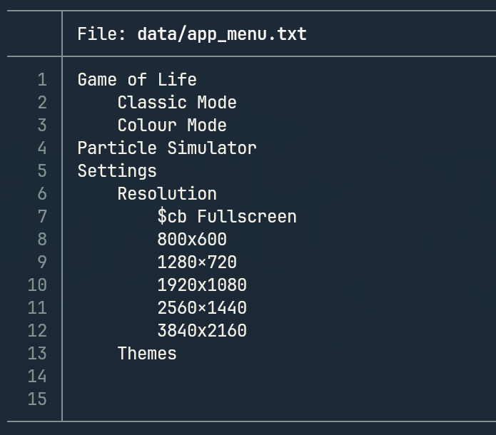
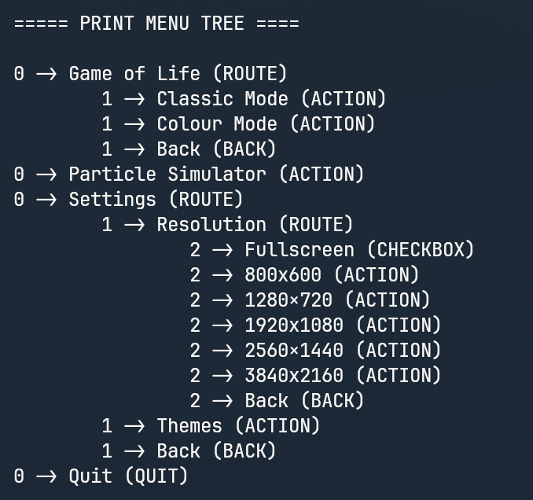
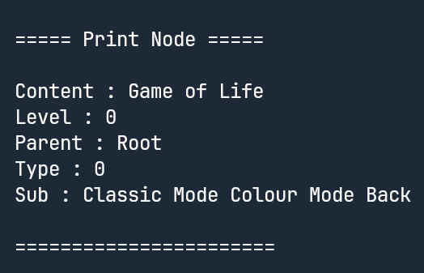
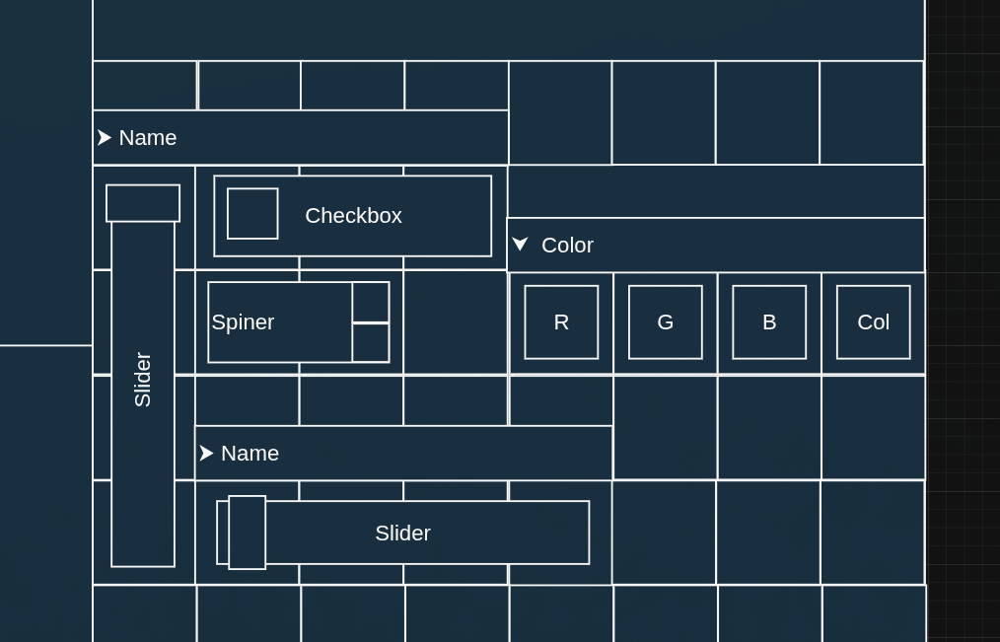

This project is a high-performance desktop application designed for building and running complex physical and rule-based simulations, such as particle systems and cellular automata.
Built from scratch using C++ and SDL3, my primary task is to create the structure for a higly malleable program by building my own UI.
At the moment, the main goal is to implement a simple Conway's Game of Life to test UI and resolve issues if needed.
Then, here is a list of examples of what could be done with it :
An Ecosystem Simulator
A Command Line Interface Game
A Midi Step Sequencer
An Acoustic Fingerprinting System
Creative Coding
A Sound Ray Tracer
UI/UX
Why my own engine ?
I chose to develop a custom graphical user interface (GUI) from scratch.
The main reason is to challenge myself, learn deeper how to strucure a project and gain full low-level control over it.
Configurations
Recursive Node-Based Menu System
I created the menu using a Recursive Descent Parser.
It takes a file with indentation and automatically generates a tree structure from it.
Each menu item is a node that can contain sub-nodes.
This is made so I can easily and quickly modify each node from the file, and at the end I only need to map the menu buttons (the ACTIONS ones bellow) to their corresponding actions.

Menu File

Menu Tree

Menu Node
Dynamic Theme Loading System
All visual colors are loaded from a theme file into a theme class and can be changed at anytime in the settings.
The Widget Matrice
The next steps focus on creating and integrating the UI components using a "Widget Matrice".
The primary goal is to enable the creation of custom matrices (serving as a versatile toolbox) either through a drag-and-drop UI or by importing data from a structured file/table.
(The exact implementation method is yet to be determined.)
Temporary Widget Types :
Name Boxes (Text Input): For entering UI infos, names, file paths, or text-based configurations.
Sliders & Spinners: Used for continuous and granular adjustment of numerical parameters (e.g., gravity strength, time step).
Check Boxes (Toggles): Simple Boolean inputs for enabling or disabling features (e.g., 'display trails', 'run physics').
Color Pickers: Dedicated controls for changing the visual properties of objects or else.
Tables: Designed to display datasets or output logs, parsed from internal simulation data.
Project Status: Actively Under Construction
The next step is to start thinking about the algorithm used to configure and build the widget matrix, and design each widget type.

The widget matrice prototype.
Particle Simulator
I will implement a particle simulator by defining rules for each particle type in order to see how this system evolves through time.
Rules could include :